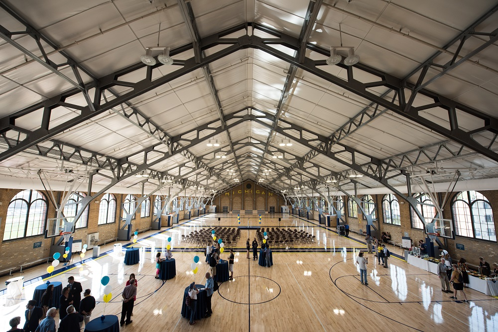
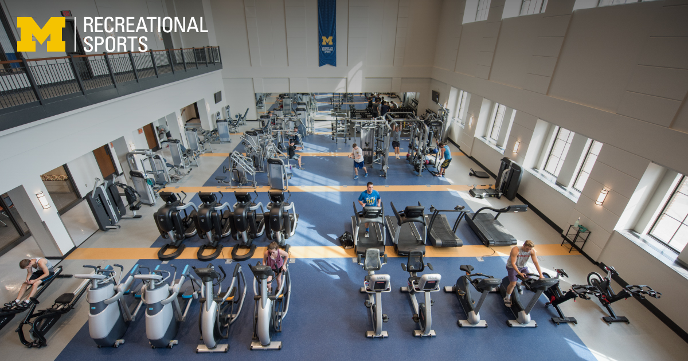
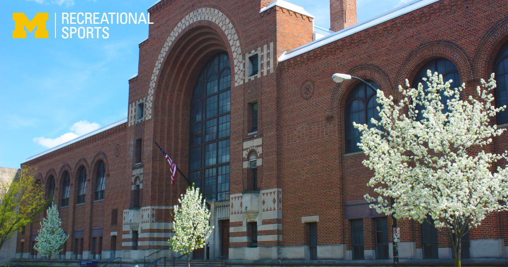

Welcome to the UM undergraduates Success Navigator
Your Comprehensive Guide to Resources for undergraduates School Success
This guide is set up to help you be successul inside and outside of the classroom and we have included the following resources throughout our site:
Academic Resources
Physical Health
Mental Health
Life Outside Classroom
Contact
Physical Health
Keeping your body healthy is essential for success. The University of Michigan offers numerous resources to help you stay in top physical condition:
University Health Service (UHS)
University Health Services Building
University Health Service (UHS): Access comprehensive medical care, including routine check-ups, vaccinations, and specialist referrals.
Recreational Sports



UMSI out in the fall!
Participate in various fitness programs, sports clubs, and use of gym facilities to stay active and healthy.
Mental Health
Maintaining your mental well-being is crucial for thriving in undergraduate school. Here are resources to support your mental health:
Mental Health Support Overview
U-M offers comprehensive mental health services through various channels. Visit our detailed mental health resources on page 3 to learn more about:
CAPS (Counseling and Psychological Services)
Wellness Coaching
Mindfulness Resources
Support Groups
Life Outside the Classroom
undergraduate school is more than just academics. It's important to cultivate a balanced life. Here are some resources to help you enjoy life outside the classroom:
Campus Life Resources
Student Organizations: Join one of the many student organizations to connect with peers who share your interests and passions.
Arts and Culture: Explore UM's vibrant arts scene with events, exhibitions, and performances happening year-round.
Career Services: Utilize career counseling, job search resources, and networking opportunities to prepare for your professional future.
Community Engagement: Get involved with local volunteering opportunities and community service projects to make a positive impact.
Housing and Dining: Find information on on-campus housing options and dining services to ensure a comfortable living experience.